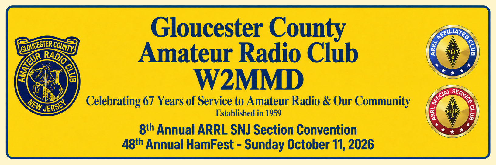

Mark your calendar for Sunday, October 11th. You have got to come check out our annual HamFest, because we
do things a little differently. Here is why this year's event is a must-attend:
-
Massive 27-Acre Venue: We are located at the expansive Gloucester County 4-H
Fairgrounds in Mullica Hill, New Jersey. This beautiful facility features parking for over 1,000
vehicles, giving everyone plenty of room to navigate.
-
150+ Outdoor Selling Spaces: For those looking to clear out their shacks, we have
more than enough room for sellers and shoppers.
-
Streamlined Vendor Setup: We are implementing brand-new outdoor vendor parking and
unloading methods this year. Our goal is simple: get you into your spot quickly so you can set up and
start selling without the hassle.
-
Covered Spaces: Prefer to stay out of the sun? Covered pavilion spaces are available
for online reservation on a first-come, first-served basis.
We are proud to feature our youth education center at this event. South Jersey Youth Coordinator Angela
Metzger, KE2DRJ, will be on-site introducing young people to basic electronic principles and hands-on Morse
code. Bring the kids or grandkids along to spark their interest in the hobby!
- Public gates: 7:00 AM
- Vendor setup: 6:00 AM
- Admission: $10 per person
- Non-ham spouses and children: Free
- Food: Breakfast and lunch available
- Tailgate space: $10 per 10-foot outdoor space
- Covered pavilion space: $15 per 10-foot space
- ARRL VEC testing: 8:00-11:00 AM
- Exam fee: $15; advance registration required
- 9:00 AM: Doing More with APRS: Application & Hardware - John Zaruba, K2ZA
- 10:00 AM: ARRL Update - Marty Newingham, AG3I, ARRL Atlantic Division Director
- 11:00 AM: Space Comm & Youth - Angela Metzger, KE2DRJ
- 11:00 AM-1:00 PM: GCARC Clubhouse Open House
Full scheduling, ticketing, seller information, and online reservation links are available on the official
HamFest website. We cannot wait to see you there. 73!
Gloucester County 4-H Fairgrounds
235 Bridgeton Pike (Route 77)
Mullica Hill, NJ 08062
Talk-in: W2MMD 147.180 MHz, PL 131.8 Hz
EchoLink: W2MMD-R | On-site help: 146.46 MHz simplex
HamFest Website
Vendor Registration
VE Exam Registration
Directions